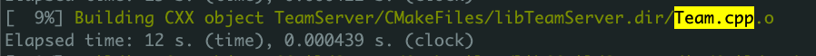
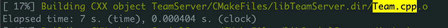

c++ 的编译速度在项目逐渐变大后，编译相比 go 和那些不需要编译的脚本语言来说，还是相当耗时的。我们项目目前在单机 16 核的情况下，进行一次完整编译大致需要 30 分钟，这次总结下我们项目中使用的和网上了解到的加快编译效率的方法。
# 1. 分布式编译
加快编译效率最简单的方法就是增加 cpu 的核数然后使用更多的核去编译，不过 cpu 的核数也不是想加就能加的，比较合适的方法就是使用分布式编译。我们项目中使用的是 distcc，安装完后进行一些配置，然后便可以利用多台机器的 cpu 核一起编译。我们使用了 10 台机器，共 112 核，最终大致能将一次完整编译时间提高到 8 分半左右。
# 2. 减少头文件的引用
c++ 会在预编译的时候展开头文件，头文件越多会导致预编译后的文件越大，编译起来也会越慢。而规模比较大的项目中往往会有一些不必要的引用。主要有间接引用过的引用、未使用的引用和可以用前置声明代替的引用。
- 间接引用过的引用，是在引用的其他头文件中已经引用过的头文件。clang 的补全功能默认会在补全时自动引用对应的头文件，不论是否间接引用过，很容易导致这个问题。
- 未使用的引用，一个文件维护过程中删除功能时很容易漏删头文件，导致这种情况。
- 可以用前置声明代替的引用，是没有使用头文件中定义的类的成员，仅使用了定义的类名，这种情况可以使用前置声明代替。
这几种情况可以用一些插件去定位问题。
主要有 IWYU（include-what-you-use）和 cppclean。
# i.IWYU
IWYU 是 google 的库，使用时嵌入在 cmake 中，在编译过程中会分析多余的 include 文件，并在编译结束后给出结果。IWYU 由于将检测过程放入了编译，因此对多余 include 的检测十分准确，而且将结果重定向到文件，官方还有个。但也正是因为如此，他对环境的版本要求很高。它的功能主要依赖 clangd，因此官方文档会有一个 clangd 版本对应 IWYU 版本的表格，不使用合适的版本的话，可能在执行时报错。同时他还依赖 gcc 的版本，虽然官方文档没提到，但 gcc 版本过低也会报错。
我尝试过在我们项目中安装 IWYU，装好对应版本后由于 gcc 版本过低，然后升级后 protobuf 版本不匹配，编译又会报错，最终放弃了它。
# ii.cppclean
cppclean 是 python 实现的一个静态扫描工具，作用也和 IWYU 类似，但 cppclean 是一个静态代码扫描工具，所以执行不需要编译，而且通过 pip 就能安装，环境也只依赖 python，因此安装和使用很简单，不过也因此没有 IWYU 那么准确，对于仅使用了引用的头文件的其他引用，它会报未使用，而且没有自带的修正脚本。
最后我在我们项目中选择使用了 cppclean，然后简单写了个脚本处理 cppclean-handle-shell。
通过处理间接引用过的头文件，项目总共删除了 285 个头文件的引用，编译时间也由 8 分多钟提升到 7 分半。其中一个删掉 7 个多余引用的文件编译时间大致提升了一半：

<center> 优化前 </center>

<center> 优化后 </center>
除此之外，要想减少头文件的引用得通过修改代码结构去减少头文件了，比如拆开一些引用比较频繁或者比较大的文件，尽量用多少就 include 多少。
# 3. 外部模板
由于模板被使用时才会实例化这一特性，相同的实例可以出现在多个文件对象中。编译器要对每一处模板进行实例化，链接器还要移除重复的实例化代码。当在广泛使用模板的项目中，编译器会产生大量的冗余代码，这会极大地增加编译时间和链接时间。C++ 11 新标准中可以通过外部模板来避免。
# 4. 总结
以上是我们项目中使用到的一些编译速度方面的优化，除了这些外，还可以将常用且不常修改的头文件预编译成动态库、解决编译依赖提高编译并行度等方法，不过我们项目暂时用不太上。参考资料里的文章讲的很多，以后我遇到适合的场景可以用～
# 参考资料
- C++ 服务编译耗时优化原理及实践